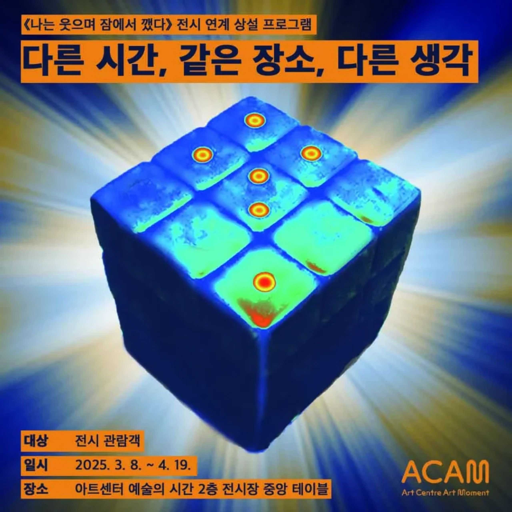
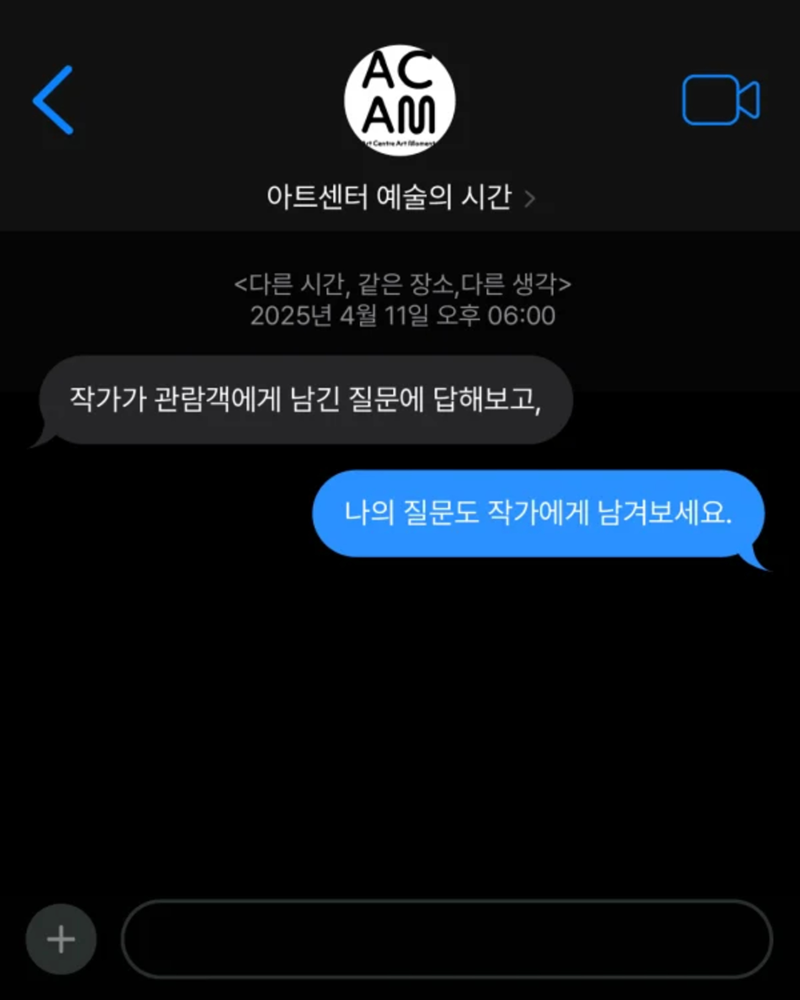
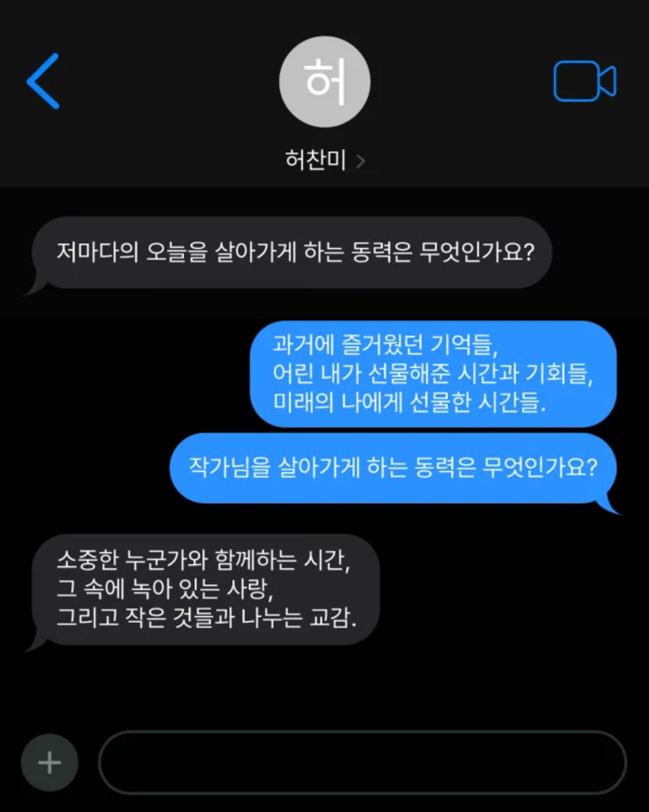
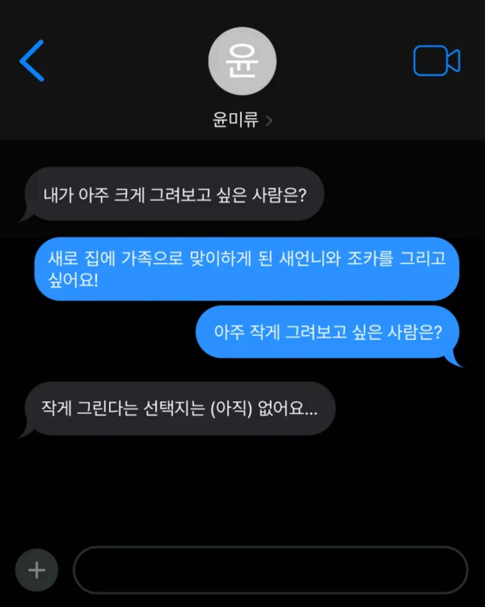
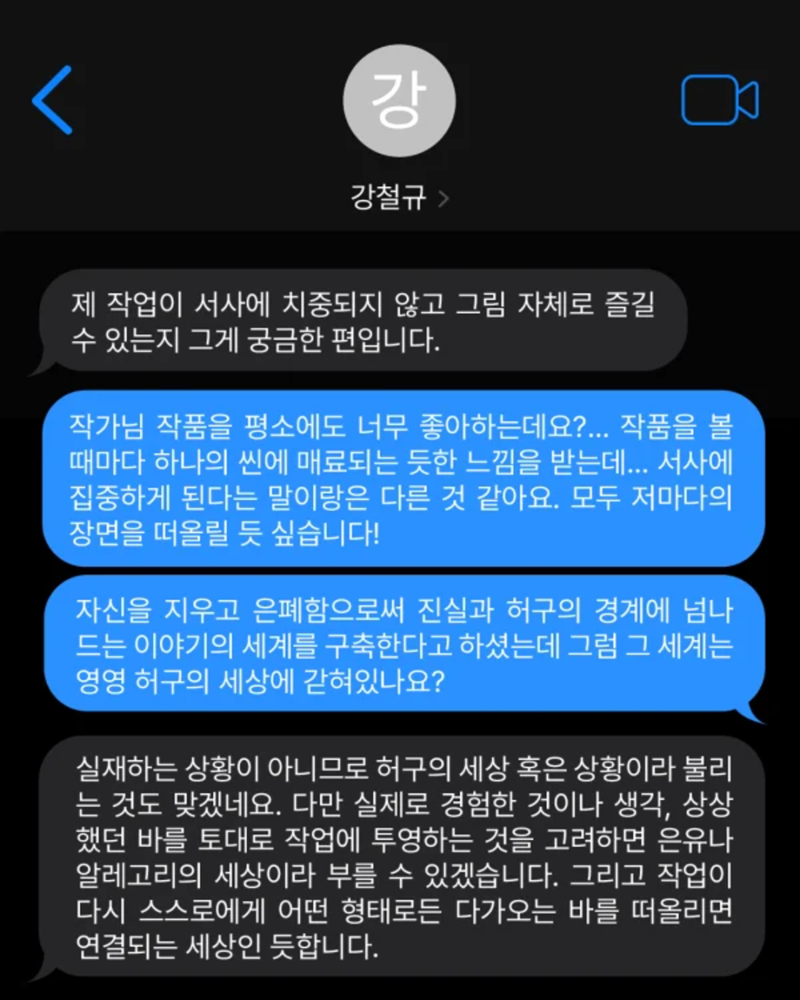
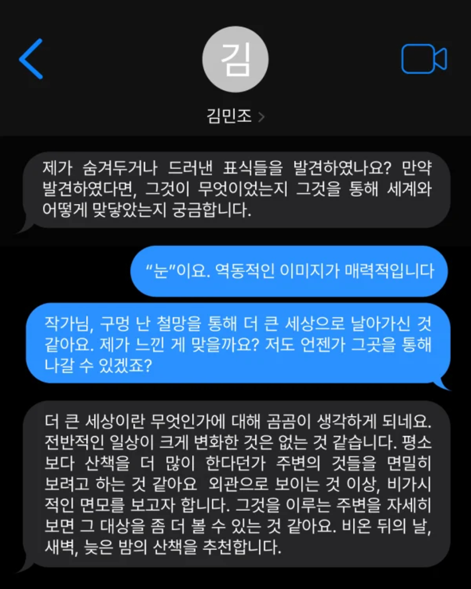
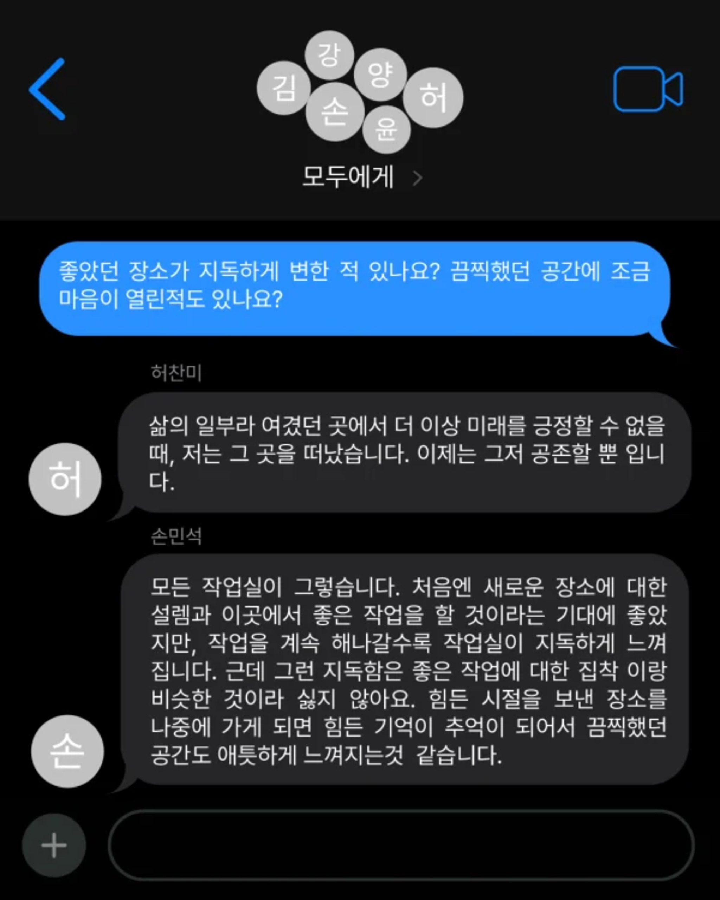
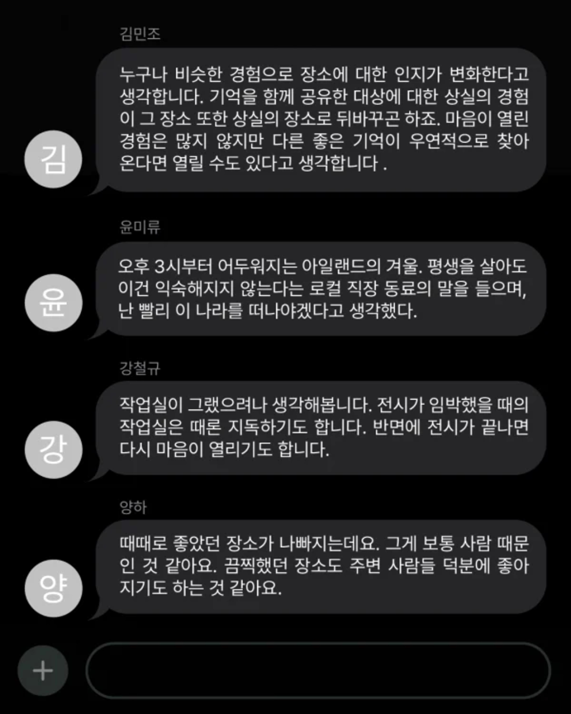

질문과 답변
<Q: 재훈
A: 유상아
Q1. 교육 프로그램의 ‘대상 설정’에 관한 질문입니다. 교육의 대상을 설정할 때 ‘일반 관람객’ 그리고 ‘사회 공헌 목적’ 중 하나를 설정해 진행한다고 말씀해 주셨는데요. 언뜻 들었을 때 제게는 두 대상이 크게 달리 느껴지지 않았습니다. ’일반 관람객‘은 기존 미술 관객이나 금천구 시민이 연상되는데 ’사회 공헌 목적‘의 예시로는 어떤 분들이 있을까요? 두산초등학교 학생들은 어느 쪽에 해당한다고 여기시는지도 궁금합니다.
A1. 제가 봐도 그 부분이 다소 혼동될 수 있겠네요. ‘사회 공헌 목적의 대상’은 주로 기관 단위의 협력 파트너를 의미합니다. 저희가 지금까지 예술교육을 제공해 온 기관으로는 장애인가족센터, 이주여성센터, 여자청소년센터, 시니어센터 등이 있습니다. 이처럼 금천구 내 여러 기관과 꾸준히 협력하며 예술교육을 이어오고 있으며, 예술교육 페스티벌 기간뿐 아니라 전시 연계 교육에서도 기획 의도나 주제에 맞을 때 함께 프로그램을 진행하고 있습니다.
‘일반 관람객’은 보다 폭넓은 개념으로, 특정 기관에 속하지 않은 남녀노소 누구나 참여할 수 있는 일반 대상을 뜻합니다. 두산초등학교의 경우는 사회 공헌 목적에 가깝습니다. 학교와의 협력을 통해 학생들에게 예술 경험을 확장해 주는 취지이기 때문입니다.
다시 한번 대상 설정에 대해 정리해 말씀드리자면, 예술교육을 기획할 때는 가장 먼저 이 프로그램을 왜, 누구를 위해 하는가를 고민해요. 그다음으로는 전시나 작가의 작업 혹은 사회적 이슈 등에서 주제와 내용을 풀어내죠. 대상에 따라 접근방식이 달라지는 겁니다, 예를 들어 일반 대상을 위한 교육과 사회공헌형 교육은 기획의 초점이 다릅니다. 사회 공헌의 경우 참여자들의 상황이나 필요를 세심하게 고려해야 하기 때문이에요.
Q2. 저는 교육의 목적이 변화에 있다고 생각해요. 교육의 참여자가 그 시간을 매개로 자신의 감정을 얼마나 표현하는지가 참여자들의 변화를 가늠하는 중요한 잣대라는 관점에 동의하고요. 그런데 저는 어느 시점 이후로 교육 환경에서든 어디에서든 서로 속마음이나 개인사를 털어놓을 정도로 자신을 타인에게 열어두는 장면이 굉장히 드물어졌다고 느낍니다. 이에는 다양한 이유가 있겠죠. 준거집단의 파편화, 알고리즘에 의존해 좁아져만 가는 각자의 타임라인, 코로나19로 인한 비대면 소통 활성화, 멈추지 않고 가속되는 경쟁주의 등등...
모두가 앞만 보고 달려가게끔 만드는 신자유주의 사회에서 예술은 기존의 인식을 유예하고 성찰할 수 있게끔 돕는 소중한 토대입니다. 그런 점에서 관객이 작품으로 잘 접근할 수 있도록 돕는 예술 교육을, 저는 희망 어린 시선으로 보고 있어요. 일종의 환상이기도 한데요. 😊
저는 에듀케이터님께서 지금껏 진행하거나 참여해 온 (예술) 교육 중에서 (꼭 긍정적인 방향이 아니라도) 가장 감정적으로 격렬했던 혹은 가장 기억에 남는 프로그램이 있었다면 무엇인지 궁금합니다. 그 감정 혹은 열림이 가능하게끔 했던 요소는 무엇이라 생각하시는지도 여쭙고 싶고요.
A2. 누군가의 감상 한 문장은 저에게 늘 가장 큰 영감이 돼요. 말씀하신 것처럼 함께 이야기를 나누면 물론 좋지만, 사실 처음 만난 사람들과 낯선 공간에서 다듬어지지 않은 감상을 그대로 꺼내는 건 쉽지 않잖아요. 그래서 오히려 익명의 누군가가 남긴 한 문장에서 더 솔직하고 날 것 같은 감정이 느껴지곤 합니다.
가장 기억에 남는 교육은 전시 《나는 웃으며 잠에서 깼다》와 연계한 상설 프로그램 <다른 시간, 같은 장소, 다른 생각>이에요. 작가가 감상자에게 품고 있던 호기심과 관객이 작품을 통해 떠올리는 생각이 자연스럽게 오가는 프로그램이었고, 작품에 관한 질문처럼 보이지만 그 속에 개인의 고민이 스며 있는 문장들이 많았어요. 참여율 또한 높아서 저에게도 인상 깊은 경험으로 남아 있습니다.
말씀하신 우려처럼, 과학기술의 발전 이후 예술이 ‘참도 거짓도 없는 문화체제’ 속에서 위치를 잃어가고 있다는 시선도 존재하죠. 하지만 여전히 예술은 여전히 지워지지 않는 감성에 호소하며, 설명하기 어려운 어떤 전율을 사람들에게 남긴다고 믿어요. 그렇기 때문에 저는 예술교육이 그 깊은 내면의 감정들을 ‘표현되고 이해되는 감정’으로 바꿀 수 있는 장치라고 생각하고, 앞으로도 그 가능성을 꾸준히 지지하고 싶습니다.

▣ 프로그램 안내
아트센터 예술의 시간은 《나는 웃으며 잠에서 깼다》 전시를 감상하고 떠오른 단편적인 생각을 적어보는 전시 연계 프로그램을 진행합니다. 작가와 관람객 사이를 질문으로 연결하며 감상을 공유하는 프로그램입니다. 작가가 관람객에게 남긴 질문에 답해보고, 나의 질문도 작가에게 남겨봅니다.
      
기관 소개글
아트센터 예술의 시간
2020